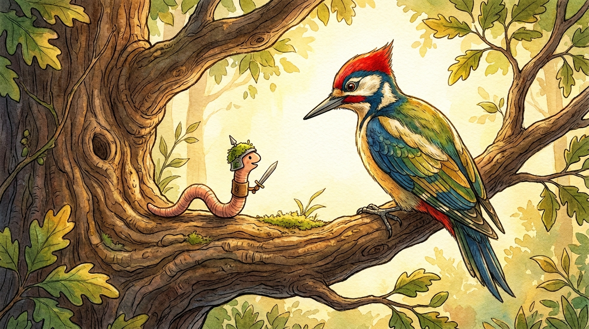

Der kluge Wurm Wendelin und der Specht

Diese Geschichte anhören
Es war einmal ein kleiner, mutiger Regenwurm namens Wendelin, der an einem sonnigen Morgen auf die feuchte Rinde einer alten Eiche kroch. Plötzlich schattete ein großer Schatten das Sonnenlicht ab, als sich ein hübscher Buntspecht direkt vor ihm auf einen Ast setzte. Der Vogel öffnete schon seinen spitzen Schnabel, um den dicken Wurm als Frühstück zu verschlingen. In seiner Not rief Wendelin laut: Bitte friss mich nicht, lieber Vogel, denn wenn du mir das Leben schenkst, erfülle ich dir einen ganz besonderen Wunsch! Der Specht hielt überrascht inne, lachte leise und fragte, was ein so winziges Geschöpf ihm wohl bieten könne. Ich wünsche mir schon lange, die geheimsten Schätze und Wurzeln tief unter der Erde zu kennen, sagte der Specht neugierig. Wendelin nickte eifrig und versprach, ihm jeden Tag den Weg zu den schmackhaftesten Höhlen und verborgenen Käfern tief im Erdboden zu zeigen. Der Vogel schloss seine Augen, dachte kurz nach und beschloss, dem cleveren Wurm eine Chance zu geben. Von diesem Tag an schlossen die beiden einen ungewöhnlichen Bund und wurden die besten Freunde im ganzen Wald. Der Specht beschützte den kleinen Wurm fortan vor allen anderen Raubvögeln, während Wendelin ihm stets die besten Schätze der Unterwelt verriet. Und so lebten sie friedlich und vergnügt zusammen, ohne dass je wieder ein Hungergefühl ihre Freundschaft bedrohte.